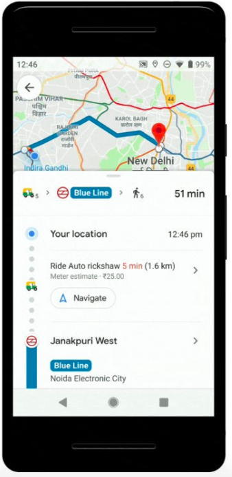
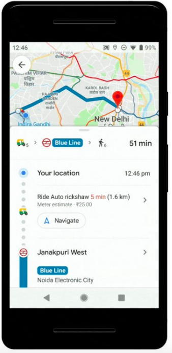

Roles
Tools
Google Maps was the leading app that my user participants used for planning their trips. Offering public transit data in and out of metropolitan areas, users are given the ability to download maps for offline use. However, Google Maps lacks in providing real-time public transit information and walking navigation directions can be inaccurate.
Moovit, a community-driven app, gives users access to real-time transit data but is limited for those who need driving directions/public transit information in regions where transit options are limited. coupled with the fact that the app doesn’t allow users to manually update their route while in use.
 

High importance user stories
Preliminary workflow sketches
Mobile screenshot for iOS